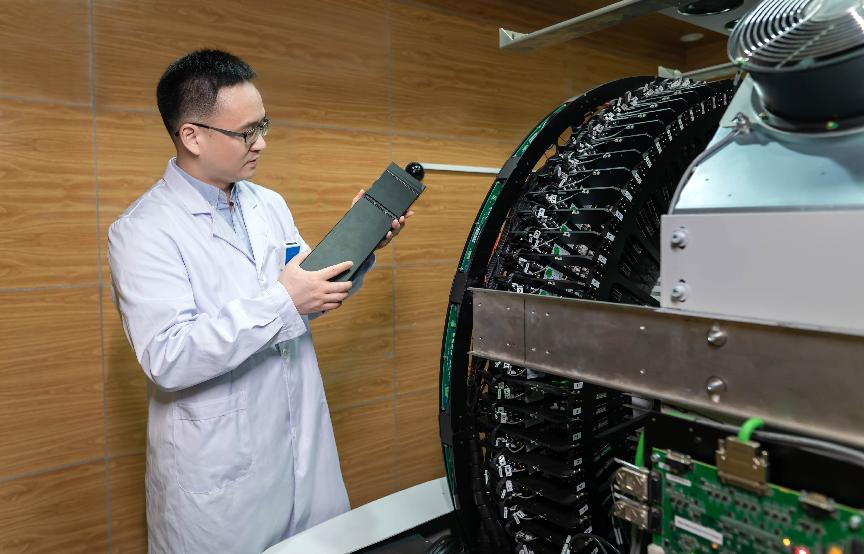

我国独创全数字PET进入临床稳定运行
科技日报记者 刘志伟 通讯员 杨亚
4月8日记者从华中科技大学获悉，由该校谢庆国团队发明的全球首款临床全数字PET，去年6月在湖北省鄂州市中心医院投入试运行以来，这台“火眼金睛”的“癌症预警机”为数百名患者提前“揪”出了癌症病灶，走完从研发成果到临床应用的艰难创新过程，实现了国产创新医疗仪器从0到1的跨越式发展。
“因为实现了数字化、模块化，所以特别好维护，如果有哪个地方出了问题，只需要拆下一个模块换上即可，不会像传统PET维护那样牵一发而动全身，往往要花很长时间和很大力气去维护。”鄂州市中心医院核医学科主任焦次来说，相比传统PET，数字PET设备最大的特点就是好用。
全数字PET发明人谢庆国教授正在检查设备
对于患者来说，最直观的感受则是又快又准的检查体验。如果受检者不小心在检查床上移动造成了图像的伪影，或突然发生检查中断的意外情况，数字PET都不需要重新扫描，而是通过图像处理软件就可以及时校正。在降低辐射剂量的同时，实现又快又准地查出结果。
PET是正电子发射断层成像的简称，一种生化灵敏度极高的核医学分子影像技术。在恶性肿瘤、心血管疾病、神经系统疾病等重大疾病的基础研究、早期诊断、疗效评估等方面具有极大的应用价值。
PET因研发门槛极高，此前只有极少数西方国家掌握了PET研发技术，谢庆国团队通过发明的MVT方法，解决了PET信号源头的数字化国际难题，实现了全球数字PET研发领域的原创与领先。在进入临床“实战”后，用一个个切切实实的临床案例，充分证明了这一全新技术路线的可行性，以及这一颠覆性创新科技的巨大潜力。
谢庆国介绍，全球第一台PET诞生于美国的一个小镇，全球第一台原创全数字化的PET诞生于中国湖北鄂州小城，这充分说明，一个重大科技成果能否转化成功，既取决于研发团队的实力，也要看地方政府有多大胆魄推进实施，能否高举高打倾尽全力支持。
“目前，我们在鄂州已经完成了数字PET从0到1的研发与应用突破，接下来，数字PET要尽快实现大规模、高质量的应用，尽快驶入从1到N的发展‘快车道’。”谢庆国充满期待。